この演習室のコンピュータは普通のパソコンですが，この講義は Windows ではなく，Linux を使って進めます．実社会では Windows が８割以上を占めるため，その使い方について学ぶことは非常に重要だとは思います．
ですが，この講義では，あえて Linux を使います！
その理由はもちろんあるのですが，長くなるので追々説明することにします．とりあえずここでは，コンピュータの使い方（あるいは Windows の使い方）よりももっと基本的な，コンピュータというシステムを形作っているさまざまな考え方に触れるために，Linux を使うんだということにします．
Windows の利用について演習室のコンピュータは Windows も使えるようになっているので，必要な人は自分で勉強してください（基礎教養セミナーにおいて論文の書き方やプレゼンの仕方を指導する場合があるので，その時に教えてもらえるかもしれません）．
自宅での Linux の利用についてLinux という名称は特定のソフトウェア（のパッケージ）を指したものではなく，それに準じたいくつものパッケージが存在します．それをディストリビューションと言います．Linux のディストリビューションの中には無料で入手できるものがあります．Vine Linux もその一つです．これらを自宅のパソコンに導入することも可能です．詳しくは授業担当教員や基礎教養セミナー担当教員に聞いてください．
この講義では皆さんのコンピュータの使用経験にかかわらず，みんな同じスタートラインに立つものして進めます．したがって，
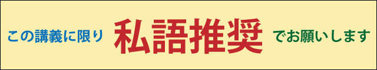
ただし，ほかの人の迷惑にならない程度でお願いします．
※ この講義（および，続く「情報処理II」「情報処理III」等）では Linux MInt を使用します．
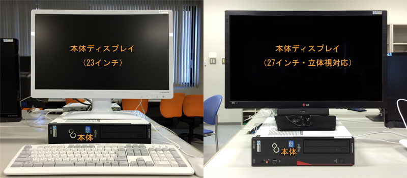
CPUとメモリコンピュータは計算をする機械ですが，そのためには計算の対象となるデータや計算の手順をどこかに覚えておく必要があります．そのための機構がメモリであり，CPU (Central Processing Unit: 中央演算処理装置) は，メモリから計算の手順やデータを取り出しながら計算を進め答えを求める，コンピュータの心臓部です．CPUの計算は一定のタイミングに沿って規則的に進められますが，そのタイミングは動作周波数（動作クロック）で決まります．一般に，この値が高いほど速く計算できることになります．3GHz（ギガヘルツ）は3×109Hzです．またメモリが大きいほどたくさんのデータやプログラムを一度に扱えることになります．1GB（ギガバイト）は1024×1024×1024バイト，英字で10億文字あまりを記憶できます．ちなみに Core i7, Core 2 Duo, Pentium, Celeron, Athron, Phenom, PowerPC, ARM などは，CPU に付けられたブランド名です．
それぞれのパソコンはこの教室内のローカルエリアネットワーク (LAN) に接続され，和歌山大学全体の LAN を通じて大学の外のネットワーク，いわゆるインターネットに（常時）接続されています．したがって，皆さんはこのコンピュータを使っていつでも自由にメール（電子メール，Eメール）を送ったり Web サーフィン（「インターネット」の「ホームページ」を「見る」こと）を行うことができます．もちろん，ワープロを使ってレポートを書いたり，自分の Web ページや CG を作ったりすることもできます．
皆さんがこのコンピュータ上で作成したファイル（データやプログラム等）は，通常のパソコンとは異なり，LAN を介して別の場所にあるファイルサーバと呼ばれるコンピュータに保存されます．したがって，この教室のどのコンピュータを使っても，以前に保存したデータやプログラムを取り出すことができます．また，メールはメールサーバに蓄えられます．なお下図の RAID ドライブは冗長構成をとることによって装置の一部が故障してもデータは保全される記憶装置，ハブはネットワークの集線装置，ルータはネットワーク同士を相互に接続する交換機です．
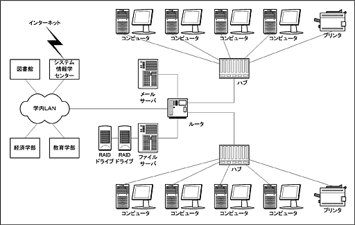
学内無線 LAN大学内のほとんどのところで無線 LAN が使えます．これを使って自分のコンピュータを大学のネットワークに接続できます．ただし，利用にはこの講義でお渡しする利用承認書に書かれているユーザ名とパスワードが必要になります．詳しくは学内無線 LAＮ 接続サービスの Web ページを見てください．
コンピュータとコンピュータの間にあるディスプレイには，教員用のコンピュータの画面やビデオ，スライド等を表示します．教員の指示に従って電源を入れてください．
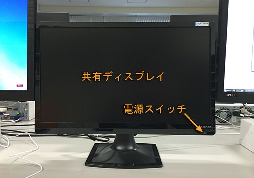
皆さんは，ここ（システム工学部A棟601号室）を含めて，以下の場所にあるコンピュータを使用できます．
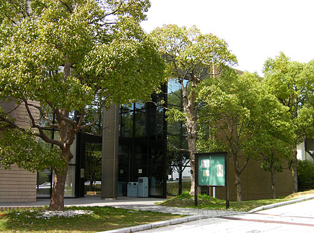
このシステム情報学センターには，３つの演習室に加えて２つのオープンスペースラボラトリー (OSL)があり，自習等に使用することができます．
大学内のコンピュータを使用する場合は，いくつかの注意点があります．特に，演習室では以下の行為は厳禁です．利用マナーが悪い場合は，ユーザアカウント（利用権）を停止する場合があります．ユーザアカウントが停止されると，いくつかの重要な講義が受講できなくなります．
上記のほかにも，大学のコンピュータやインターネットを使用する上での注意事項があります．一つはセキュリティ上の事項，もう一つは法律上の事項です．以下に，この演習室特有の事項について述べます．
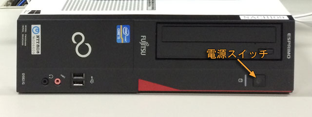
電源を入れると，起動処理の後，起動するオペレーティングシステムの選択画面が出ます．
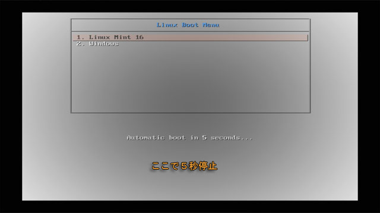
このまま何もせずにいれば５秒後に Linux (現在は Linux Mint 16) が起動しますので，そのまま待っていているか， [Enter] キーをタイプしてください．Windows (現在は Windows 7) を使用する場合は，この画面が現れてから５秒以内に上下の矢印キー[↑][↓]を動かし，Windows を選んでから [Enter] キーをタイプしてください．
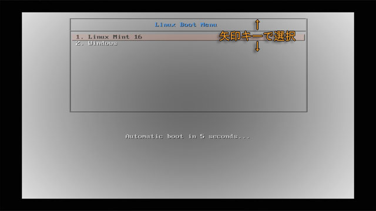
その後，コンピュータの起動に成功すると，下のようなログイン画面が現れます．
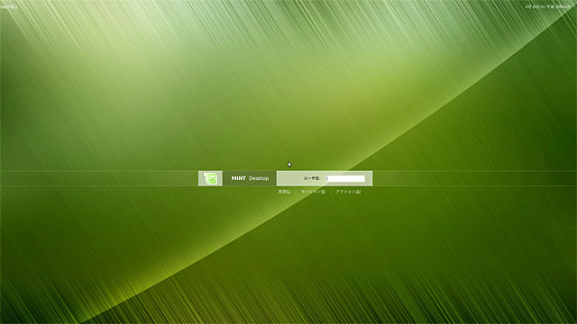
もし Windows 7 を起動してしまったときは，Windows 7 のログイン画面の右下にある赤いボタンの右側のから再起動を選んでください．
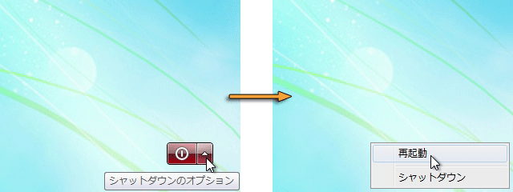
Linux や Unix 系オペレーティングシステムでは，コンピュータを利用するために，まずそのコンピュータのユーザアカウント（利用権）を取得する必要があります．皆さんのユーザアカウントは，演習室のコンピュータを使用するために，既にシステム情報学センターから取得してあります．皆さんの手元にある利用承認書には，そのユーザアカウントを使用するための登録名（ログイン名）と，その暗証番号（パスワード）が記載されています．
演習室のコンピュータを使用するには，まずそのログイン名とパスワードを使って，ログインという作業を行う必要があります．それでは，皆さんがお持ちの利用承認書に書かれているログイン名（ユーザ名）とパスワードを使ってコンピュータにログインしてください．なお，このログイン名とパスワードは，「１．５ コンピュータ演習室について」に挙げたいずれの演習室でも共通に使用できます．また，Windows を使う場合も同じユーザ名とパスワードを使用します．
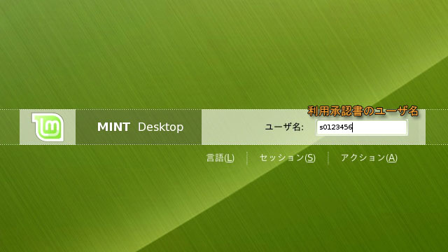
「ログイン名」の欄にログイン名を入力します．承認書に書かれているログイン名を，キーボードをタイプして入力してください．打ち間違えたときは，[Backspace]キーをタイプすれば１文字消すことができます．全部打ち終えたら [Enter] キーをタイプしてください．すると打ち込んだユーザ名が消えて，次にパスワードの入力を求めてきます．
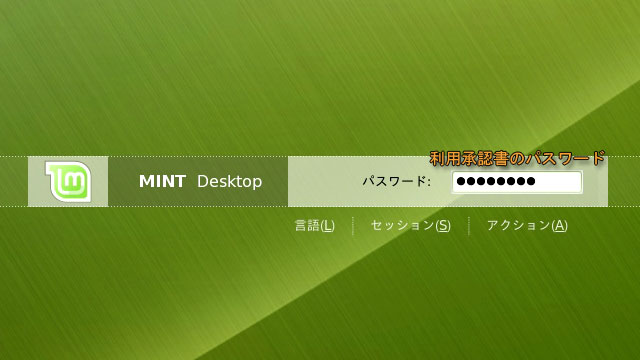
ここには承認書に書かれているパスワードをキーボードをタイプして入力してください．他人に見られないようにするために，タイプしたパスワードは画面には表示されません．大文字をタイプするには [Shift] キーを押しながらその文字をタイプしてください．
ログイン名やパスワードを打ち間違えたときログイン名やパスワードを間違えると，数秒待った後，再度ログイン名の入力画面が現れます．この場合はもう一度ログイン名から入れなおしてください．
ログインに成功すると Web ブラウザの Firefox が起動します．初めてログインしたときは，次のような Web ページが現れることがあります．この講義では Linux を使っているので Windows の設定は関係ありませんが，ここでは一応「Install Now」をクリックしてください．
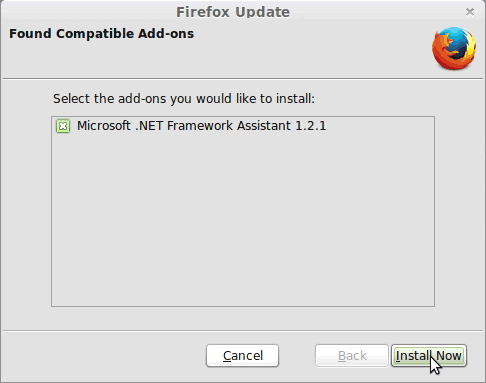
その後，次のようなウィンドウが現れたら，そのまま「Finish」をクリックしてください．
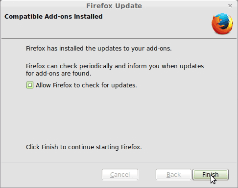
Firefox が起動して「システム工学部ポータルサイト」が表示されます．この Web ページには演習室のスケジュールなどが書かれていますので，一応目を通してください．その後，右上の「×」（閉じる）をクリックして，ウィンドウを閉じてください．
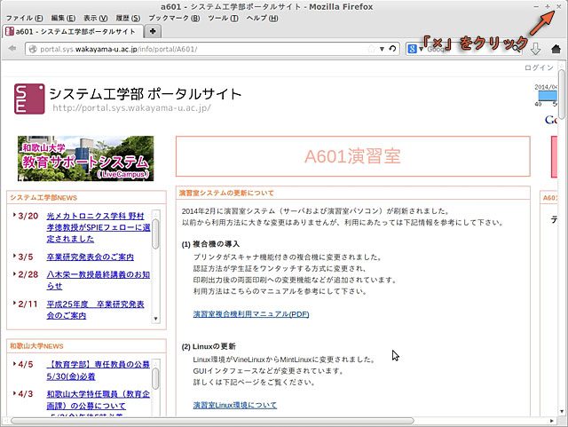
次のような背景（デスクトップ）が表示されます．
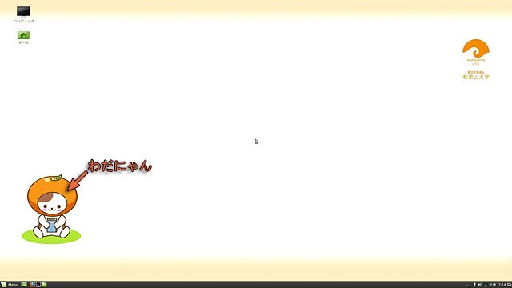
コンピュータを起動すると，まずオペレーティングシステムが起動します．このオペレーティングシステムの重要な役割のひとつに，ディスプレイやキーボードなどの入出力装置の管理があります．特に最近のオペレーティングシステムでは，ディスプレイ上に複数の仮想的な画面（ウィンドウ，窓）を開いて複数の作業を同時にこなすことができるウィンドウシステムを搭載することが一般的です．Microsoft の Windows や Apple の Mac OS X では，ウィンドウシステムがオペレーティングシステムと一体化していますが，この講義で使う Linux や Unix では，MIT(マサチューセッツ工科大学） で開発された X Window System という (オペレーティングシステムとは独立した)ソフトウェアがよく使用されます．
X Window System に対応したアプリケーションソフトウェアは，自分が行おうとする画面表示をウィンドウシステムに対して要求します．X Window System はこの要求に基づいて画面表示を行います．言わば，X Window System はお客の要求にしたがって食事を出すサーバ（給仕）であり，アプリケーションソフトウェアはサーバーに対して要求を出すクライアント（客)の役割を果たします．したがって，このようなソフトウェアの形態をサーバ・クライアントモデルと呼びます．
X Window System では，画面表示用のハードウェア（ビデオカード等）を制御するソフトウェアのことを X サーバ，X サーバに対して画面表示を要求するソフトウェアのことを X クライアントと呼びます．X Window System における X サーバと X クライアント間の通信はネットワークに対して透過的であり，ある X クライアントの画面表示を，LAN 等を介して他のコンピュータ上で稼動している X サーバに出力することができます．
画面の左下に，次のような文字や絵記号の列が描かれていると思います．このようにシンボル化されたオブジェクト（対象）を一般にアイコン（図記号・絵記号）と呼びます．また，画面の下部のこの領域はパネルと呼びます．
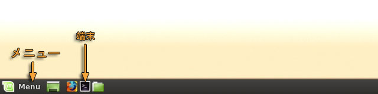
では，この中の端末（コマンド・ライン端末）のアイコンをマウスの左ボタンでクリックしてみてください．すると，下のような "ウィンドウ" が現れると思います．以降，特に断らない限り，「クリックする」と指示された時にはマウスの左ボタンを使ってください．
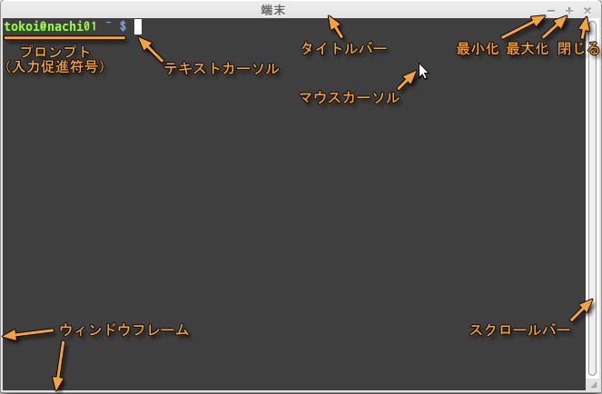
端末は，実際には gnome-terminal というアプリケーションソフトウェアです．この中でさらにシェルと呼ばれるプログラムが稼動しています．シェルはプロンプト（入力促進符号）を表示して，利用者がコマンド（指令）を入力するのを待っています．
このウィンドウの周囲の枠は端末自身のものではなく，ウィンドウマネージャという別のソフトウェアが付けています（スクロールバーは端末自身のものです)．
ウィンドウを開くと，画面の上部にあるパネルの中にあるタスク・リストに，そのウィンドウを示すボタンが現れます．選択されているウィンドウ（利用者の操作の対象になっているウィンドウ）に対応するボタンは「へこんで」表示されます．隠されたウィンドウに対応するボタンは「グレー」になっています．このボタンをクリックして操作するウィンドウを切り替えたり，ウィンドウを隠したりできます．
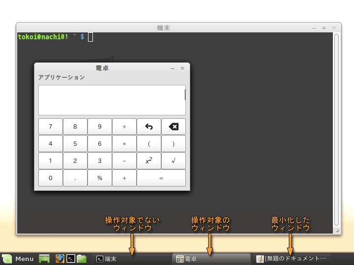
ウィンドウマネージャはウィンドウシステム上の個々のウィンドウを管理し，マウスの操作などの情報をウィンドウシステムやアプリケーションソフトウェアに伝達します．ウィンドウを移動したり，ウィンドウのサイズを変えたり，ウィンドウを閉じたりする操作は，このウィンドウマネージャによって実現されています．
X Window System ではウィンドウマネージャがウィンドウシステムやオペレーティングシステムから独立しているために，ウィンドウマネージャやデスクトップ環境が交換可能です．これらを別のものに交換することによって，コンピュータの画面の見かけや操作方法を全く異なるものに変更することができます．この講義では metacity というウィンドウマネージャを使用しています．
デスクトップ環境について
ウィンドウを移動するには，タイトルバーをドラッグしてください．
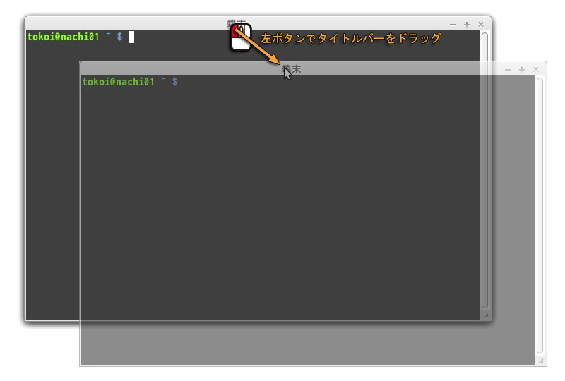
ウィンドウのサイズを変更するには，ウィンドウフレームをドラッグしてください．
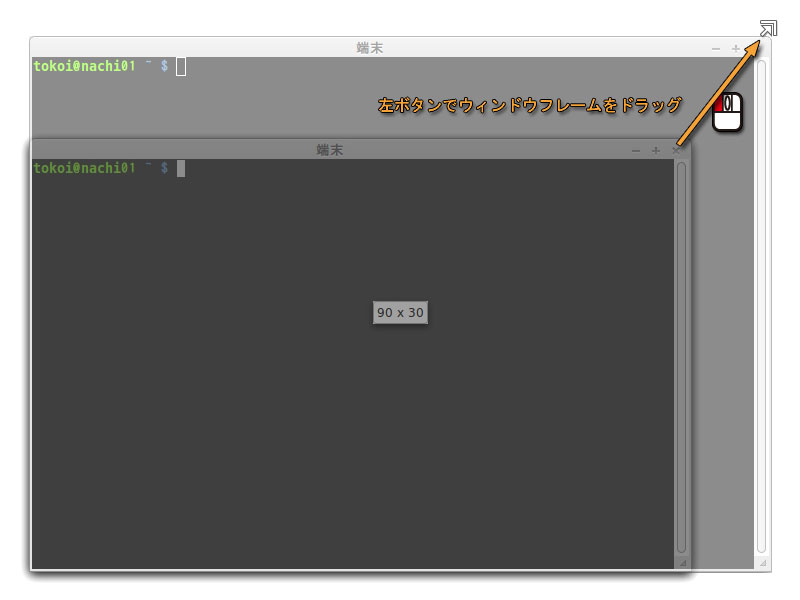
他のウィンドウで隠されてしまったウィンドウを前面に出すには，タイトルバーをクリックしてください．あるいは，画面上のタスク・リストからウィンドウを選択するか，画面右上のウィンドウ・セレクタからウィンドウを選択してください．
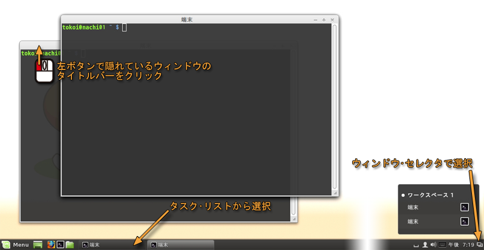
手前のウィンドウが邪魔なときは，タイトルバーをマウスの中央ボタンでクリックしてください．
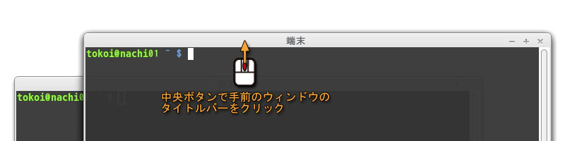
ウィンドウを最小化するには，「最小化」ボタンをクリックしてください．
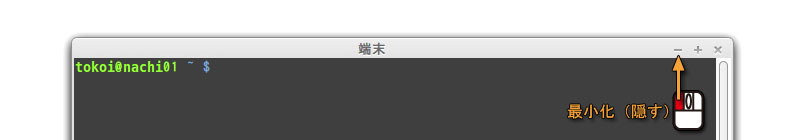
最小化したウィンドウを元に戻すには，画面上のタスク・リストに表示されている，対応するタスクをクリックしてください．
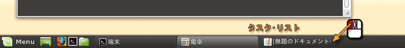
ウィンドウを最大化するには，「最大化」ボタンをクリックしてください．
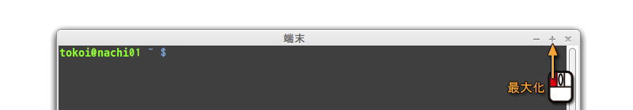
最大化したウィンドウを元に戻すには，もう一度「最大化」ボタンをクリックしてください．
次の２つの方法があります．
端末を終了させるには，その中で動いているシェルを終了させます．シェルを終了させるには，exit コマンドを使います．Ctrl-D をタイプ（[Ctrl]キーを押しながら D のキーをタイプ）してもシェルを終了することができます．
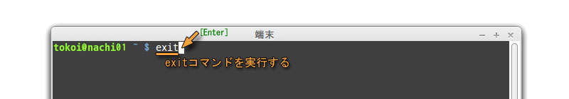
タイトルバーの右端にある「閉じる」ボタンは，単にそのウィンドウを閉じます．ウィンドウを閉じたことによってアプリケーションソフトウェアがこれ以上動作している必要がないと自分で判断した場合に，アプリケーションソフトウェアは終了します．
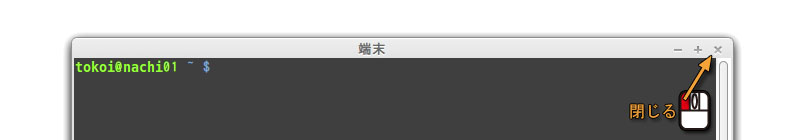
タイトルバーやウィンドウフレーム上でマウスの右ボタンでクリックすると，ポップアップメニューが現れます．
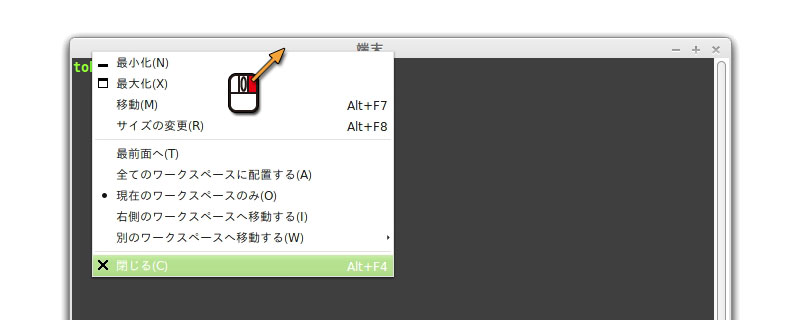
ポップアップメニューからはこれまでに述べたウィンドウ操作のほか，より高度な操作が行えるようになっています．
日本語を使うためには，ログイン時に日本語の入力方法 (Input Methid: IM) を指定する必要があります（演習室では自動的に選択されています）．この講義では，日本語の入力に iBus と Mozc というシステムを組み合わせて使います．キーボードから入力されたローマ字やカナの文字列を iBus が受け取り，Mozc を使って漢字かなまじりの文字列に変換します．なお，Mozc は Google 日本語入力のオープンソース版です．
まず，日本語を入力するアプリケーション（ウィンドウ）を選択します．ここでは試しに端末を使ってみましょう．
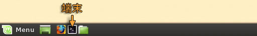
ウィンドウが現れてプロンプトが表示されたら，[半角/全角] キーをタイプしてください．
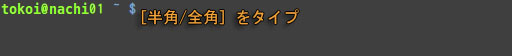
すると，画面の右上のキーボードのアイコンが（あ）に変わります．これで日本語入力のモードに切り替わります．
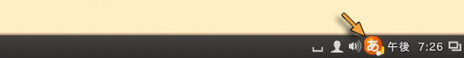
そのままローマ字でタイプすると，それがひらがなになって入力されます．変換の候補が現れますので，その中に適当なものがあれば [Tab] キーをタイプして選択してください．
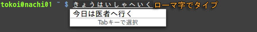
スペースバーまたは変換キーをタイプすると，入力したひらがなが漢字かな混じり文に変換されます．変換を取り消すには [ESC] をタイプします．
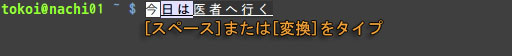
上の例では「今日は」と「医者へ」の間で文節が切れています．「今日」の文節を縮めるには，[Shift] を押しながら←（左矢印）キーをタイプしてください．逆に文節を伸ばすには，[Shift] を押しながら→（右矢印）キーをタイプしてください．
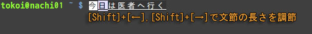
変換対象の文節を右に移動するには，→（右矢印）をタイプします．左に移動するには←（左矢印）をタイプします．
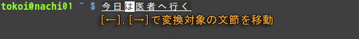
ここでは「は医者へ」を「歯医者へ」に直したいので，[Shift] を押しながら→（右矢印）キーをタイプして文節を伸ばします．
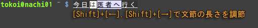
スペースバーまたは変換キーを二回以上タイプすると，変換の候補一覧が現れます．さらにスペースバー，変換キー，あるいは↓（下矢印）をタイプすれば次の候補，↑（上矢印）キーをタイプすれば前の候補を選択できます．直接カタカナに変換するには，スペースバーや変換キーの代わりに，ファンクションキーのF7，ひらがなに戻すにはF6，全角英字に変換するにはF9，半角文字に変換するにはF8を使います．
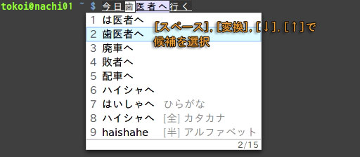
所望の変換結果が得られたら，[Enter] をタイプして確定します．
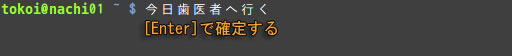
もう一度 [半角/全角] キーをタイプするか，[Shift] キーを押しながらスペースバーをタイプすれば，日本語入力のモードから抜け出ます．
インターネットの代名詞とも言える WWW (World Wide Web) を参照するソフトウェアを，「Web ブラウザ」と言います． これには Windows に組み込まれている Internet Explorer が最もよく使われていますが，Linux 用の Internet Explorer は（今のところ）ありません．代わりに Linux 上では，Internet Explorer 以前に広く普及し現在のインターネットブームを起こした立役者でもあった Netscape （開発終了）をはじめ，Netscape をもとにオープンソースで開発された Mozilla （開発終了，後継は SeaMonkey），Galeon，Ephiphany，KDE上で開発されている Konqueror，Google の chrome / chromium，ノルウェーのオペラソフトウェアの Opera，テキストベースの lynx や w3m，テキストエディタ Emacs の中で動く w3m.el，それにファイル管理ソフトウェアである Nautilus など，さまざまなものがあります．この講義では Mozilla から派生した Firefox を使うことにします．
画面左下の下図のアイコンをクリックしてくださいFirefox が起動します．
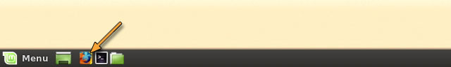
この講義の Web ページを開きます．アドレスバーに次の URL を入力してください．Ctrl-L をタイプすれば，アドレスバーの変更がすぐにできます．
| 講義資料 |
|---|
| http://www.wakayama-u.ac.jp/~tokoi/lecture/shori1/ |
この URL の中の "~"（チルダ）を入力するには，[Shift] を押しながら [Backspace] の一つおいて左側にある "^" のキーをタイプしてください．
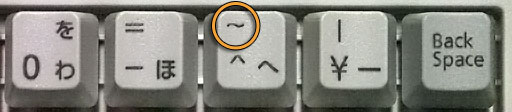
"~"（チルダ）の字形について"~"（チルダ）は画面表示に使う字体（フォント）によって， 上の方にあったり，波線だったり，直線だったりしますが， 字形が異なるだけですから気にしないで下さい．
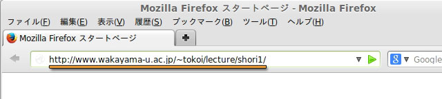
URL を入力後 [Enter] をタイプしてください．
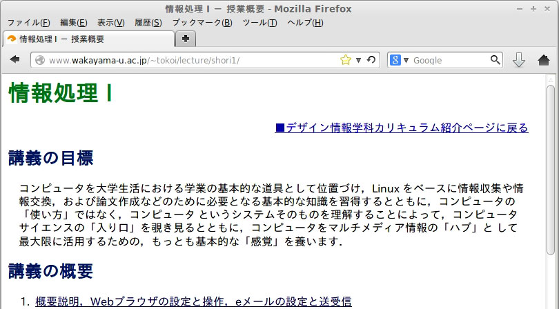
この講義は，今後この Web ページを使って進めます．
ブックマークは， よく参照するページを覚えておく機能です．現在，この講義の Web ページが表示されていると思いますから，これをブックマークに登録しておいてください．メニューの「ブックマーク」から「このページをブックマーク」を選ぶか，Ctrl-D をタイプしてください
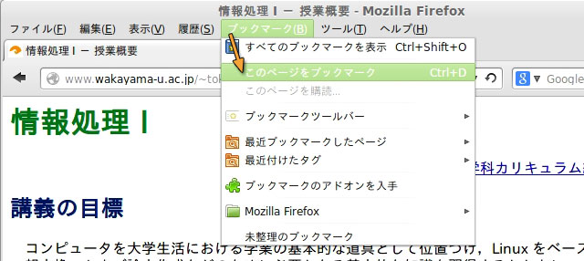
現在見ているページをブックマークに登録するかどうか確認するウィンドウが出ますので，フォルダに「ブックマークメニュー」が指定されていることを確認して，「完了」をクリックしてください．
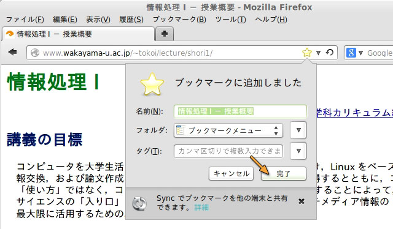
これ以降メニューのブックマークをクリックすると， 登録されている Web ページの一覧の中に，現在表示しているページが追加されます．以降はこれを選ぶだけで， すぐこのページを表示することができます．
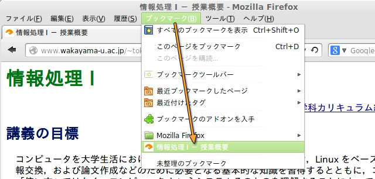
すでにいくつかのブックマークが登録されていますが，必要に応じて自分で整理してください．「ブックマークの管理」を選ぶか Ctrl-Shift-B をタイプすれば， ブックマークの管理ウィンドウが現れます．なお，以下のデザイン情報学科学生ポータルサイトもよく使いますので，ブックマークに加えておいてください．
| デザイン情報学科 学生ポータル |
|---|
| http://sakaedani.sys.wakayama-u.ac.jp/di/ |
ここのシステム（Linux 側）で使用できる Web を閲覧するためのソフトウェア（Web ブラウザ）には，以下のものがあります．興味があれば使ってみてください．
| Web の閲覧に使うソフトウェア | |
|---|---|
| Firefox | 高機能な Web ブラウザ |
| Google Chrome | Google 社が開発している高機能な Web ブラウザ |
| Opera | ノルウェーのオペラ・ソフトウェアが開発している高機能な Web ブラウザ |
| Epiphany | GNOME デスクトップの一部として開発されている Web ブラウザ |
| lynx | コマンドラインで使えるテキストベースのウェブブラウザ |
| w3m | コマンドラインで使えるテキストベースのウェブブラウザ（日本人が開発している） |
Firefox を終了するには，「ファイル」メニューから「終了」を選びます．タイトルバーの右上の「×」でも構いません．でも，講義はまだ続きますので，ここではまだ終了しないでください．
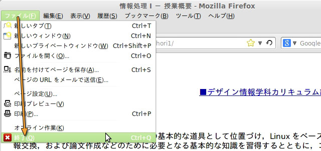
プリントによる解説は，ここで終わりです．以降は Web 上の講義資料を参照してください．
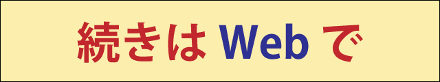
システム情報学センターは大学のコンピュータやネットワーク設備の運用管理，およびそれらに関する各種サービスを提供しています．
| 和歌山大学システム情報学センターホームページ URL |
|---|
| http://www.center.wakayama-u.ac.jp/ |
システム情報学センターでは大学宛のメールを Web ブラウザを使って読み書きする Web メールサービスも提供しています．これを利用するにはシステム情報学センターのホームページから Active! mail のページを開き，利用承認書のユーザ名とパスワードを入力してログインしてください．携帯電話からはモバイル版を開いてください．
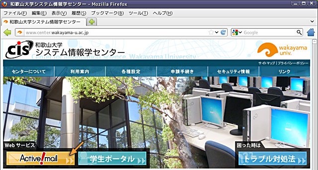
利用承認書に書かれているユーザ名とパスワードを指定してください．
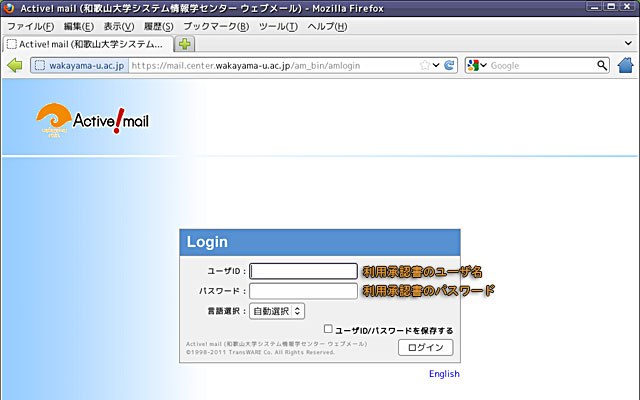
受講登録やレポート提出，休講通知の閲覧などは，「教育サポートシステム (LiveCampus)」を使用して行う必要があります．LiveCampus はシステム情報学センターの学生ポータルからアクセスできます（和歌山大学のホームページのキャンパスライフにもリンクがあります）．
学生ポータルのページが開いたら，「LiveCampus」をクリックしてください．
「教育サポートシステム (LiveCampus)」のログイン画面が表示されます．
LiveCampus のログイン画面の左側にある「アカウント」と「パスワード」の欄に，それぞれ「利用承認書のユーザ名」と「利用承認書のパスワード」を入力して，「ログイン」をクリックしてください．
新入生の皆さんに対して，アンケートを実施しています．ご協力をお願いします．LiveCampus のホームページの上部にある「トップメニュー」から「授業サポート」を選んでください．
この時間中に入力が終わらなければ，別の空き時間に入力をお願いします．
アンケート内容の取り扱いについてアンケート回答内容はLiveCampus管理者（事務係）が集計を行い，担当教員には回答の有無のみ通知され，各人の回答内容を個別に確認することはありません．また，回答内容は個人を特定しない形で集計のうえ本学の入学者選抜の検討に利用します．
履修登録を行うには，画面の上部にある「ホーム」をクリックして LiveCampus のホームページに戻り，左側の「システム関連リンク」にある「教務システム」をクリックしてください．これは後で時間のある時にやってください．
この講義では，電子メールの読み書きするのに，Thunderbird というアプリケーションを使います．画面左下の「Menu」から「インターネット」→「Thunderbird 電子メールクライアント」の順に選んでください．Thunderbird が起動します．
皆さんが和歌山大学において（和歌山大学のメールアドレスを用いて）メールをやり取りするためのパソコンの設定は，システム情報学センターの Configuration for mail clients using CIS servers という Web ページで解説されています．ここでは Tunderbird でのメールのアカウント設定について解説します．Thunderbird を初めてここで初めて起動すると，最初に「メールサーバのパスワードの設定」を行うウィンドウが現れます．
Thunderbird を使うたびにパスワードを設定するのが面倒なら，「パスワードを記憶する」にチェックを入れておいてください．設定が完了したら，「続ける」をクリックしてください．なお，皆さんのメールアドレスは，（利用承認書に書かれている）ユーザ名@center.wakayama-u.ac.jp です．ユーザ名が s123456 なら，メールアドレスは以下のようになります．
| 自分のメールアドレスの例（利用承認書を確認してください） |
|---|
| s123456@center.wakayama-u.ac.jp |
皆さん宛てのメールは，mail.center.wakayama-u.ac.jp というメールサーバに届きます．自宅や配属された研究室など，演習室以外の場所からこのメールを読むには，自分のパソコンのメールソフトに IMAP のアカウントを作成し，メールサーバに下記を設定してください．くれぐれも POP3 でアカウントを作成しないよう注意してください．
| システム情報学センターメールサーバ |
|---|
| mail.center.wakayama-u.ac.jp |
メールサーバからメールを読み出す方法には，IMAP の他に POP3 というものもあります．多くのインターネット接続サービスで POP3 が使用されていますが，和歌山大学ではいろんなところからメールを読み出せるように，IMAP を使うようにしています．
POP3 (Post Office Protocol 3) はメールサーバからメールを取り出す機能だけを提供しますが，IMAP (Internet Message Access Protocol) はメールサーバにメールを戻したり整理したりするする機能も提供します．したがって，POP3 では読んだメールをクライアント（パソコン）側に取り込んで管理しますが，IMAPではメールサーバ上に置いたまま管理することができます．このため，複数のパソコンで同じメールアカウントを使用した場合，POP3 では読んだメールがそれらのパソコンに分散して保存されてしまいます．これに対してIMAPでは，どのパソコンからも同じ内容の「受信箱」が利用できます．
STARTTLS / SSL についてメールを読み込むためには，メールサーバとの間でユーザ名とパスワードやメールの本文などの通信データをやりとりする必要があります．その際，通信データを暗号化していないと，ネットワークに流れる通信データを覗き見ることにより，第３者やメールの内容を知ることができてしまいます．STARTTLS はメールサーバに接続した後，通信を SSL による暗号化します．
アカウントの作成に成功すると，「システム統合」のウィンドウが現れる場合があります．これが現れたら，そのまま「OK」をクリックしてください．
これで Thunderbird が使用可能になります．
アカウント設定を修正します．左側の枠のアカウント名（メールアドレス）を選択してください．そして右側の枠の「このアカウントの設定を表示する」をクリックしてください．
「アカウント設定」のウィンドウが表示されたら，左側の枠の自分のメールアドレスを選択してください．「既定の差出人情報」が表示されますから，「名前」を確認し，「組織」を設定してください．また，必要なら「署名」も設定してください．
次に，左側の枠の「編集とアドレス入力」を選んでください．この設定の「HTML 形式でメッセージを編集する」のチェックをはずしてください．また，「キャレットの初期状態」は，メールの返信時のテキストカーソルの初期位置を指定します．これを「引用部の上」に切り替えることもできます．
左の枠の「編集とアドレス入力」を選んでください．「編集」のところの「HTML 形式でメッセージを編集する」にチェックが入っていたら，チェックをはずしてください．
HTML形式のメッセージについてThunderbird ではホームページなどで用いられるHTML (Hypter Text Markup Language) を使ってメールを作成することができます．しかし，メールの受信者が使っているメールソフトによっては，この形式のメールを読めない場合があります．携帯電話などでもいまだに対応できない機種があるようです．また，仮に相手がこの形式のメールが読める場合でも，人によってはあまり喜ばれない場合もあります．そこで，相手のメール環境がわからない場合には，HTML形式のメールを送らないのがマナーだと考えます．
以上の設定が完了したら，最後に「OK」をクリックしてください．
メールを書いてみます．「受信トレイ」を選択するか，「メッセージを読む」をクリックしてください．
もしかしたら，既に誰かからメールが届いているかもしれません．
メールの設定が完了したら，自分宛にメールを書いてみて，ちゃんと届くかどうか確認してみてください．ウィンドウの上方にあるアイコンの列（ツールバー）の中の「作成」をクリックするか，「メッセージを書く」をクリックしてください
メールの作成ウィンドウが開きますから，「宛先」に自分のメールアドレスを指定し，「件名」や本文に適当な文章を書いて，最後に「送信」をクリックしてください．[TAB] キーをタイプすれば，欄を移動できます．
ウィンドウの上方にあるアイコンの列（ツールバー）の中の「受信」をクリックするか，「受信トレイ」あるいは「メッセージを読む」をクリックしてください．
自分宛のメールが届いていたでしょうか？もし何も届いていなかったり，MAILER-DAEMON からメールが届いていたりした場合は，何か設定に問題があります．その場合はもう一度設定を確かめてください．原因がわからなければ質問してください．
MAILER-DAEMON からのメール出したメールが宛先の間違いや何らかのトラブルで相手に届けられなかったときは，MAILER-DAEMON からメールが送り返されてきます．これはコンピュータが自動的に発送するメールなので，このメールには返事を書かないでください．
自分宛のメールを読むことができれば，今度は担当教員 tokoi@sys.wakayama-u.ac.jp 宛てに何かメッセージを書いてください（たとえば，好きなものを一つ教えてください）．届いたメールにはごく簡単に返事を書きます．
注意事項ネチケット
人と人とがメールや Web，チャットなんかでつながった「ネットワークコミュニティ」を，実社会とは別の「仮想世界」のように感じてしまうかもしれません．しかし実際にはそこは，普通の社会の一つの断面に過ぎません．そこでの振舞いには，実社会と同じモラルやマナーが求められます．ただ，媒体として通信ネットワークが介在するために，さらにネットワークコミュニティ特有の配慮も必要になります．ネットワークコミュニティにおけるこのようなエチケットのことを「ネチケット」と呼んでいます．ネチケットについては，下記に優れたなリンク集があります．あなたの目の前のコンピュータの向こう側にも， 「人」がいるんだと言うことを忘れないでください．セキュリティ
インターネットの世界の中にある「悪意」から自分自身を守るには，いくつか知っておかなければならない事項があります．メールに関しては，添付ファイルは中身が確認できなければ絶対開かないことを肝に銘じておいてください．添付ファイルでなくてもチェーンメール（「不幸の手紙」みたいなもの）やネズミ講の勧誘，犯罪を誘発しそうな Web サイトへの誘いなど，さまざまな「悪意」が送りつけられてきます．嫌な言い方ですが，「他人の言うことは，とりあえず信用しない」ことを基本姿勢にすることが，そういう悪意から身を守る第一歩でしょう．
Thunderbird を終了するには，右上の [≡] のボタンをクリックして現れるメニューから「終了」を選んでください．タイトルバーの右上の「×」でも構いません．
以下の手順の前に，Firefox を終了してください．Firefox を終了させずにパソコンの電源を切ると，次回 Firefox が起動できなくなることがあります．
コンピュータの使用が終わったら，コンピュータにログインする前の状態に戻します．この操作のことをログアウトといいます．画面の左下にある「Menu」をクリックして，左側の下から二つ目のボタンをクリックしてください．なお，今のところログアウトが正常にできないという不具合が起こることがあります．その場合は「電源スイッチ」を押してください．
次に，「このシステムから今すぐログアウトしますか？」というウィンドウが現れますので，「ログアウト」をクリックするか，[Enter] キーをタイプしてください．これでログイン画面に戻ります．
電源を切る場合は，画面の左下にある「Menu」をクリックして，左側の一番下のボタンをクリックしてください．このコンピュータを停止する操作のことをシャットダウンといいます．
次に，「このシステムを今すぐシャットダウンしますか？」というウィンドウが現れますので，「シャットダウン」をクリックするか，[Enter] キーをタイプしてください．これでコンピュータが停止し，自動的に電源が切れます．
なお，ログアウト後に電源を切る場合は，ログイン画面のオプションをクリックして停止を選んだ後，「停止」をクリックしてください．あるいは，いきなり電源スイッチを押してもかまいません．
不具合が発生したとき演習室のコンピュータは Windows と Linux の両方が使えるようになっていますが，そのために Web ブラウザやメールソフトの設定を共有する設定をしています．しかし，実際には Windows 側と Linux 側でソフトウェアのバージョンが一致しない場合があり，この設定により不具合を起こす場合もあります．そのような場合は教員やシステム情報学センターに問い合わせてください．
なお，Firefox と Thunderbird が起動していない状態で，端末に次の内容をタイプして，最後にキーボードの [Enter] をタイプすれば，設定を初期化することができます．ただし，設定は最初からやり直す必要があります．
次に，Thunderbird を起動してください．するとメールアドレスを取得するウィンドウが表示されますが，既にシステム情報学センターのアカウントを持っているので，ここでは「メールアカウントを設定する」をクリックしてください．
自分の名前（本名）のほか，システム情報学センターの利用承認書に書かれている「メールアドレス」と「パスワード」を設定し，「パスワードを記憶する」にチェックが入っているのを確認して，「続ける」をクリックしてください．
正しいメールアドレスを設定してれば，メールアドレスから使用するサーバが推定され，自動的に受信サーバと送信サーバが設定されます．「完了」をクリックします．
これでアカウントの作成は完了です．なお，Firefox の方はブックマーク以外，特に設定することはありません．
学外（携帯）からのメールに関してお願いです．
自宅等学外からの宿題メール送信について今回の宿題は大学の設備を使ってメールを出せるかどうかの確認も兼ねているので，自宅や携帯からメールを送ってもらっても嬉しくありません．自宅等の環境も有効に活用して欲しいとは思うので学外からの宿題メールも受け取りますが，その際にもメールの From: は，できれば大学のメールアドレスにしてください．そうしないと私がメールを受信する時に自動振り分けされないため，宿題メールを見落としてしまう可能性があります．それから，HTML 形式のメールもスパム（迷惑メール）と間違えて読まない可能性があるので気を付けてください．この講義では皆さんに「HTML 形式のメールを送らない設定」をしていただいているので，問題ないと思います :-)
蛇足ながら，一応，捕捉しておきます．
見たいページを探す自分の見たいページを探すには，サーチエンジンと呼ばれる Web ページを利用します． インターネット上には多くのサーチエンジンがありますが，これらはおおまかに次の２つのタイプに分類することができます．
- ディレクトリ型
- 人手によって Web ページの情報を分類・整理し，階層的なデータベースにしたものです．代表的なものには，以下のようなものがあります．
- 全文検索型
- ロボット（クローラー）と呼ばれるプログラムでインターネットのあらゆるページの情報を自動的に集め，全文検索データベースを構築します．代表的なものには，以下のようなものがあります．
ディレクトリ型は人手によって整理されているために，無駄な情報が少なく興味のあるカテゴリのページを見つけやすいという特徴があります．その反面，漏れや更新の遅れが大きいと考えられます．
全文検索型は Web ページに含まれるキーワードを機械的に抜き出してデータベースを構築するので，漏れが少なく更新も早いと考えられますが，検索結果の中からすばやく本当に必要な情報を見つけるには多少の経験が必要です．
最近は全文検索型が主流になっていますが，上記のものを含むほとんどのところで，ディレクトリ型と全文検索型の両方の機能を持たせています．これらのほかに学術論文を対象にした Google Scholar や arXiv.org とか，図書館の蔵書を検索するカーリルのようにターゲットを絞ったもの，人力検索サイト「はてな」，意思決定エンジン Hunch，キーワードでなく画像そのもので検索する TinEye など多様なものがあります．Wolfram|Alpha はなんでも「計算」で答を出してくれる，とても興味深い知能エンジンです．微分・積分のような記号計算もできます．